En bref
Blizzard a annoncé plus de 600 nouvelles recettes, sans publier la liste complète. Cette fiche rassemble les 241 recettes de Ingénierie relevées dans les fichiers du jeu (client 1.60.1.70862, consultés le 12 novembre 2026). Les noms et les compétences requises viennent des fichiers du jeu. L’obtention indiquée « inconnu » reste à confirmer. Les tableaux sont groupés par palier de compétence requise. Quand l’obtention, la source ou la zone n’est pas indiquée dans les données consultées, la cellule le dit clairement. Aucun taux de butin n’est repris, aucun n’était indiqué.[1][2][4]
Points clés
- 241 recettes de Ingénierie listées ci-dessous, d’après les fichiers du jeu (client 1.60.1.70862, 12 novembre 2026) ; l’obtention « inconnu » reste à confirmer.[4] Données du jeu (client 1.60.1.70862)
- Obtention indiquée dans les fichiers du jeu : formateur 85, butin 1, quête 7, réputation 2, inconnu 146.[4] Données du jeu (client 1.60.1.70862)
- Blizzard n’a pas publié la liste complète des recettes, ni les formateurs, vendeurs, prix ou taux de butin.[1][2]
- Composants de 241 recettes et 166 matériaux liés à leur fiche « où le trouver » (fichiers du jeu).[5] Données du jeu (client 1.60.1.70862)
Comment lire cette liste
Cette liste n’est pas officielle. Blizzard n’a pas publié le détail des recettes de ce métier (vendeurs, formateurs, monstres, zones, prix, taux de butin). Les noms et les compétences ci-dessous viennent des fichiers du jeu (client 1.60.1.70862). L’obtention « inconnu » reste à confirmer. Le nom français est celui de la localisation du jeu lorsqu’il a été trouvé ; à défaut, le nom anglais est utilisé dans les deux langues. « Formateur » couvre aussi les recettes indiquées comme apprises automatiquement avec le métier. Une page d’ensemble déjà en ligne, Recettes et plans avancés (/fr/metiers/recettes-et-plans-avances/), rappelle les règles officielles d’obtention et les recettes à butin déjà présentées par zone.[1][2][4]
- 241 recettes listées pour Ingénierie.[4] Données du jeu (client 1.60.1.70862)
- Répartition dans les fichiers du jeu : formateur 85, butin 1, quête 7, réputation 2, inconnu 146.[4] Données du jeu (client 1.60.1.70862)
- Zone renseignée pour 1 recette(s) ; non indiquée pour les autres.[4] Données du jeu (client 1.60.1.70862)
Compétence 1–75 — 14 recettes (données du jeu)
| Recette | Compétence requise | Obtention | Source | Zone | Statut |
|---|---|---|---|---|---|
| Balle légère fabriquée | 1 | formateur | appris automatiquement avec le métier | non indiqué | données du jeu |
| Robot vendeur de composants | 1 | formateur | maître de métier (non nommé) | non indiqué | données du jeu |
| Poudre d'explosion basique | 1 | formateur | appris automatiquement avec le métier | non indiqué | données du jeu |
| Dynamite basique | 1 | formateur | appris automatiquement avec le métier | non indiqué | données du jeu |
| Dynamite SUR-T | 25 | inconnu | non indiqué | non indiqué | données du jeu — obtention à confirmer |
| Languette SUR-T | 25 | inconnu | non indiqué | non indiqué | données du jeu — obtention à confirmer |
| Poignée de boulons en cuivre | 40 | formateur | maître de métier (non nommé) | non indiqué | données du jeu |
| Bombe grossière en cuivre | 52 | formateur | maître de métier (non nommé) | non indiqué | données du jeu |
| Bombe en cuivre SUR-T | 55 | inconnu | non indiqué | non indiqué | données du jeu — obtention à confirmer |
| Clé plate | 65 | formateur | maître de métier (non nommé) | non indiqué | données du jeu |
| Lanceur de signal de supplanteur de moissonneur | 65 | quête | Reaping the Reapers | non indiqué | données du jeu |
| Tube en cuivre | 72 | formateur | maître de métier (non nommé) | non indiqué | données du jeu |
| Espingole grossière | 72 | formateur | maître de métier (non nommé) | non indiqué | données du jeu |
| Ecureuil mécanique | 75 | inconnu | non indiqué | non indiqué | données du jeu — obtention à confirmer |
Compétence 76–150 — 50 recettes (données du jeu)
| Recette | Compétence requise | Obtention | Source | Zone | Statut |
|---|---|---|---|---|---|
| Poudre d'explosion grossière | 80 | formateur | maître de métier (non nommé) | non indiqué | données du jeu |
| Balle lourde fabriquée | 80 | formateur | maître de métier (non nommé) | non indiqué | données du jeu |
| Lunette basique | 82 | formateur | maître de métier (non nommé) | non indiqué | données du jeu |
| Dynamite grossière | 85 | formateur | maître de métier (non nommé) | non indiqué | données du jeu |
| Sacoche de bombes en cuivre | 85 | inconnu | non indiqué | non indiqué | données du jeu — obtention à confirmer |
| Modulateur en cuivre | 87 | formateur | maître de métier (non nommé) | non indiqué | données du jeu |
| Tube de bronze | 93 | formateur | maître de métier (non nommé) | non indiqué | données du jeu |
| Grande bombe en cuivre | 93 | formateur | maître de métier (non nommé) | non indiqué | données du jeu |
| Dynamite Ev-Lan | 100 | inconnu | non indiqué | non indiqué | données du jeu — obtention à confirmer |
| Emballage Ev-Lan | 100 | inconnu | non indiqué | non indiqué | données du jeu — obtention à confirmer |
| Petite charge d'hydroglycérine | 100 | inconnu | non indiqué | non indiqué | données du jeu — obtention à confirmer |
| Contact en argent | 102 | formateur | maître de métier (non nommé) | non indiqué | données du jeu |
| Leurre | 107 | formateur | maître de métier (non nommé) | non indiqué | données du jeu |
| Petite bombe en bronze | 108 | formateur | maître de métier (non nommé) | non indiqué | données du jeu |
| Serrure d'entraînement | 110 | formateur | maître de métier (non nommé) | non indiqué | données du jeu |
| Bidule bourdonnant en bronze | 113 | formateur | maître de métier (non nommé) | non indiqué | données du jeu |
| Batterie 9-60 | 120 | formateur | maître de métier (non nommé) | non indiqué | données du jeu |
| Balle dure fabriquée | 120 | formateur | maître de métier (non nommé) | non indiqué | données du jeu |
| Poudre d'explosion majeure | 120 | formateur | maître de métier (non nommé) | non indiqué | données du jeu |
| Dynamite puissante | 120 | formateur | maître de métier (non nommé) | non indiqué | données du jeu |
| Espingole amoureusement construite | 120 | inconnu | non indiqué | non indiqué | données du jeu — obtention à confirmer |
| Lunettes des ombres | 120 | inconnu | non indiqué | non indiqué | données du jeu — obtention à confirmer |
| Lunettes de tigre volant | 122 | formateur | maître de métier (non nommé) | non indiqué | données du jeu |
| Tromblon mortel | 124 | formateur | maître de métier (non nommé) | non indiqué | données du jeu |
| Papier de verre | 124 | formateur | maître de métier (non nommé) | non indiqué | données du jeu |
| Pare-flammes | 125 | inconnu | non indiqué | non indiqué | données du jeu — obtention à confirmer |
| Télécommande universelle gnome | 125 | inconnu | non indiqué | non indiqué | données du jeu — obtention à confirmer |
| Petite comète bleue | 125 | inconnu | non indiqué | non indiqué | données du jeu — obtention à confirmer |
| Petite comète verte | 125 | inconnu | non indiqué | non indiqué | données du jeu — obtention à confirmer |
| Petite fusée violette | 125 | inconnu | non indiqué | non indiqué | données du jeu — obtention à confirmer |
| Petite comète rouge | 125 | inconnu | non indiqué | non indiqué | données du jeu — obtention à confirmer |
| Petite fusée blanche | 125 | inconnu | non indiqué | non indiqué | données du jeu — obtention à confirmer |
| Petite fusée jaune | 125 | inconnu | non indiqué | non indiqué | données du jeu — obtention à confirmer |
| Grande bombe en bronze | 128 | formateur | maître de métier (non nommé) | non indiqué | données du jeu |
| Lunette standard | 129 | formateur | maître de métier (non nommé) | non indiqué | données du jeu |
| Bombe en cuivre XL Ev-Lan | 130 | inconnu | non indiqué | non indiqué | données du jeu — obtention à confirmer |
| Bottes-fusées gobelines | 130 | inconnu | non indiqué | non indiqué | données du jeu — obtention à confirmer |
| Structure en bronze | 133 | formateur | maître de métier (non nommé) | non indiqué | données du jeu |
| Pédale en forme de sabot | 140 | quête | Gizmo for Warug | non indiqué | données du jeu |
| Recombobulateur mineur | 140 | inconnu | non indiqué | non indiqué | données du jeu — obtention à confirmer |
| Robot réparateur | 140 | butin | Sneed | The Deadmines | données du jeu |
| Attracteur de poissons aquadynamique | 145 | formateur | maître de métier (non nommé) | non indiqué | données du jeu |
| Carabine vise-lune | 145 | inconnu | non indiqué | non indiqué | données du jeu — obtention à confirmer |
| Rembourrage antidérapant SUR-T | 145 | inconnu | non indiqué | non indiqué | données du jeu — obtention à confirmer |
| Bombe en bronze SUR-T | 145 | inconnu | non indiqué | non indiqué | données du jeu — obtention à confirmer |
| Fusil plaqué argent | 149 | formateur | maître de métier (non nommé) | non indiqué | données du jeu |
| Fusée bleue | 150 | inconnu | non indiqué | non indiqué | données du jeu — obtention à confirmer |
| Fusée verte | 150 | inconnu | non indiqué | non indiqué | données du jeu — obtention à confirmer |
| Fusée rouge | 150 | inconnu | non indiqué | non indiqué | données du jeu — obtention à confirmer |
| Dynamite géante SUR-T | 150 | inconnu | non indiqué | non indiqué | données du jeu — obtention à confirmer |
Compétence 151–225 — 87 recettes (données du jeu)
| Recette | Compétence requise | Obtention | Source | Zone | Statut |
|---|---|---|---|---|---|
| Longue-vue ornée | 154 | formateur | maître de métier (non nommé) | non indiqué | données du jeu |
| Pare-glace | 155 | inconnu | non indiqué | non indiqué | données du jeu — obtention à confirmer |
| Contrefiche en fer | 155 | formateur | maître de métier (non nommé) | non indiqué | données du jeu |
| Rayon discombobulateur | 160 | inconnu | non indiqué | non indiqué | données du jeu — obtention à confirmer |
| Gyrochronatome | 160 | formateur | maître de métier (non nommé) | non indiqué | données du jeu |
| Kit de moissonneur compact | 165 | formateur | maître de métier (non nommé) | non indiqué | données du jeu |
| Défibrillateur gobelin | 165 | inconnu | non indiqué | non indiqué | données du jeu — obtention à confirmer |
| Micro-ajusteur gyromatique | 165 | formateur | maître de métier (non nommé) | non indiqué | données du jeu |
| Grenade en fer | 165 | formateur | maître de métier (non nommé) | non indiqué | données du jeu |
| Mortier portable en bronze | 165 | inconnu | non indiqué | non indiqué | données du jeu — obtention à confirmer |
| Sacoche de bombes en bronze | 165 | inconnu | non indiqué | non indiqué | données du jeu — obtention à confirmer |
| Mouton explosif | 169 | formateur | maître de métier (non nommé) | non indiqué | données du jeu |
| Lunettes teintées vertes | 169 | formateur | maître de métier (non nommé) | non indiqué | données du jeu |
| Poudre noire solide | 170 | formateur | maître de métier (non nommé) | non indiqué | données du jeu |
| Dynamite solide | 170 | formateur | maître de métier (non nommé) | non indiqué | données du jeu |
| Leurre perfectionné | 175 | formateur | maître de métier (non nommé) | non indiqué | données du jeu |
| Lunettes d'oeil brillant | 175 | inconnu | non indiqué | non indiqué | données du jeu — obtention à confirmer |
| Corde cliquetante | 175 | inconnu | non indiqué | non indiqué | données du jeu — obtention à confirmer |
| Ceinturon à gadgets | 175 | inconnu | non indiqué | non indiqué | données du jeu — obtention à confirmer |
| Grande comète bleue | 175 | inconnu | non indiqué | non indiqué | données du jeu — obtention à confirmer |
| Grande comète verte | 175 | inconnu | non indiqué | non indiqué | données du jeu — obtention à confirmer |
| Grande fusée violette | 175 | inconnu | non indiqué | non indiqué | données du jeu — obtention à confirmer |
| Grande comète rouge | 175 | inconnu | non indiqué | non indiqué | données du jeu — obtention à confirmer |
| Grande fusée blanche | 175 | inconnu | non indiqué | non indiqué | données du jeu — obtention à confirmer |
| Grande fusée jaune | 175 | inconnu | non indiqué | non indiqué | données du jeu — obtention à confirmer |
| Cloche SUR-T | 175 | inconnu | non indiqué | non indiqué | données du jeu — obtention à confirmer |
| Lanière dentelée | 175 | inconnu | non indiqué | non indiqué | données du jeu — obtention à confirmer |
| Mouton de sécurité | 175 | inconnu | non indiqué | non indiqué | données du jeu — obtention à confirmer |
| Baudrier fantaisiste | 175 | inconnu | non indiqué | non indiqué | données du jeu — obtention à confirmer |
| Lunette de précision | 180 | inconnu | non indiqué | non indiqué | données du jeu — obtention à confirmer |
| Grande bombe en fer | 180 | formateur | maître de métier (non nommé) | non indiqué | données du jeu |
| Monocle d'artisan | 185 | inconnu | non indiqué | non indiqué | données du jeu — obtention à confirmer |
| Bombe éclairante | 185 | quête | Flash Bomb Recipe | non indiqué | données du jeu |
| Tube en mithril | 185 | formateur | maître de métier (non nommé) | non indiqué | données du jeu |
| Dispositif de déploiement de bannière centaure | 190 | quête | Gizmo for Warug | non indiqué | données du jeu |
| Mortier en bronze Ev-Lan | 190 | inconnu | non indiqué | non indiqué | données du jeu — obtention à confirmer |
| Mèche ignifugée Ev-Lan | 190 | inconnu | non indiqué | non indiqué | données du jeu — obtention à confirmer |
| Trousse de réparation mécanique | 190 | formateur | maître de métier (non nommé) | non indiqué | données du jeu |
| Maître-neige 9000 | 190 | inconnu | non indiqué | non indiqué | données du jeu — obtention à confirmer |
| Déclencheur instable | 190 | formateur | maître de métier (non nommé) | non indiqué | données du jeu |
| Mine gobeline | 195 | inconnu | non indiqué | non indiqué | données du jeu — obtention à confirmer |
| Charge de sapeur gobelin | 195 | formateur | maître de métier (non nommé) | non indiqué | données du jeu |
| Alarme mobile | 195 | formateur | maître de métier (non nommé) | non indiqué | données du jeu |
| Lunettes tordues | 200 | inconnu | non indiqué | non indiqué | données du jeu — obtention à confirmer |
| Lunettes cabossées | 200 | inconnu | non indiqué | non indiqué | données du jeu — obtention à confirmer |
| Dynamite Ev-Lan II | 200 | inconnu | non indiqué | non indiqué | données du jeu — obtention à confirmer |
| Grenade Ev-Lan | 200 | inconnu | non indiqué | non indiqué | données du jeu — obtention à confirmer |
| Flèche explosive | 200 | formateur | maître de métier (non nommé) | non indiqué | données du jeu |
| Lunettes molles | 200 | inconnu | non indiqué | non indiqué | données du jeu — obtention à confirmer |
| Système d'occultation gnome | 200 | inconnu | non indiqué | non indiqué | données du jeu — obtention à confirmer |
| Recette du carburant de fusée gobelin | 200 | formateur | maître de métier (non nommé) | non indiqué | données du jeu |
| Balles perçantes en mithril | 200 | formateur | maître de métier (non nommé) | non indiqué | données du jeu |
| Cylindre damasquiné en mithril | 200 | formateur | maître de métier (non nommé) | non indiqué | données du jeu |
| Grande charge d'hydroglycérine | 200 | inconnu | non indiqué | non indiqué | données du jeu — obtention à confirmer |
| Petit dragon mécanique | 200 | inconnu | non indiqué | non indiqué | données du jeu — obtention à confirmer |
| Lunettes à bouton cassé | 200 | inconnu | non indiqué | non indiqué | données du jeu — obtention à confirmer |
| Casque de mineur gobelin | 205 | inconnu | non indiqué | non indiqué | données du jeu — obtention à confirmer |
| Petit fumant | 205 | inconnu | non indiqué | non indiqué | données du jeu — obtention à confirmer |
| Caisse en mithril | 205 | formateur | maître de métier (non nommé) | non indiqué | données du jeu |
| Bombe explosive en mithril | 205 | formateur | maître de métier (non nommé) | non indiqué | données du jeu |
| Bombinette | 205 | inconnu | non indiqué | non indiqué | données du jeu — obtention à confirmer |
| Lunette mortelle | 210 | inconnu | non indiqué | non indiqué | données du jeu — obtention à confirmer |
| Bombe SUR-T | 215 | inconnu | non indiqué | non indiqué | données du jeu — obtention à confirmer |
| Coque SUR-T | 215 | inconnu | non indiqué | non indiqué | données du jeu — obtention à confirmer |
| Lunettes d'oeil de chat | 220 | inconnu | non indiqué | non indiqué | données du jeu — obtention à confirmer |
| Lunettes de feu | 220 | formateur | maître de métier (non nommé) | non indiqué | données du jeu |
| Rayon réducteur gnome | 220 | formateur | maître de métier (non nommé) | non indiqué | données du jeu |
| Distributeur de bombes des gobelins | 220 | formateur | maître de métier (non nommé) | non indiqué | données du jeu |
| Casque de chantier gobelin | 220 | formateur | maître de métier (non nommé) | non indiqué | données du jeu |
| Mortier des gobelins | 220 | formateur | maître de métier (non nommé) | non indiqué | données du jeu |
| Tromblon en mithril | 220 | formateur | maître de métier (non nommé) | non indiqué | données du jeu |
| Carabine de gros calibre en mithril | 220 | inconnu | non indiqué | non indiqué | données du jeu — obtention à confirmer |
| Chapelet de comètes bleues | 225 | inconnu | non indiqué | non indiqué | données du jeu — obtention à confirmer |
| Porte-créature compact | 225 | inconnu | non indiqué | non indiqué | données du jeu — obtention à confirmer |
| Cape d’urgence de terrain | 225 | inconnu | non indiqué | non indiqué | données du jeu — obtention à confirmer |
| Lanceur de fusées | 225 | quête | Lanceur de fusée | non indiqué | données du jeu |
| Lunettes gnomes | 225 | formateur | maître de métier (non nommé) | non indiqué | données du jeu |
| Lance-filet automatique gnome | 225 | formateur | maître de métier (non nommé) | non indiqué | données du jeu |
| Chapelet de comètes vertes | 225 | inconnu | non indiqué | non indiqué | données du jeu — obtention à confirmer |
| Bombe explosive | 225 | formateur | maître de métier (non nommé) | non indiqué | données du jeu |
| Cape parachute | 225 | inconnu | non indiqué | non indiqué | données du jeu — obtention à confirmer |
| Chapelet de fusées violettes | 225 | inconnu | non indiqué | non indiqué | données du jeu — obtention à confirmer |
| Chapelet de comètes rouges | 225 | inconnu | non indiqué | non indiqué | données du jeu — obtention à confirmer |
| Lunettes de fortification des sorts | 225 | inconnu | non indiqué | non indiqué | données du jeu — obtention à confirmer |
| Le Mastoc | 225 | formateur | maître de métier (non nommé) | non indiqué | données du jeu |
| Chapelet de comètes blanche | 225 | inconnu | non indiqué | non indiqué | données du jeu — obtention à confirmer |
| Chapelet de comètes jaunes | 225 | inconnu | non indiqué | non indiqué | données du jeu — obtention à confirmer |
Compétence 226–300 — 90 recettes (données du jeu)
| Recette | Compétence requise | Obtention | Source | Zone | Statut |
|---|---|---|---|---|---|
| Casque de scaphandrier | 230 | inconnu | non indiqué | non indiqué | données du jeu — obtention à confirmer |
| Ceinture de prévention gnome | 230 | formateur | maître de métier (non nommé) | non indiqué | données du jeu |
| Boîte à "Boum" des gobelins | 230 | formateur | maître de métier (non nommé) | non indiqué | données du jeu |
| Sacoche de bombes en fer | 230 | inconnu | non indiqué | non indiqué | données du jeu — obtention à confirmer |
| Petite radio gnome | 235 | formateur | maître de métier (non nommé) | non indiqué | données du jeu |
| Radio des gobelins | 235 | formateur | maître de métier (non nommé) | non indiqué | données du jeu |
| Balle gyroscopique en mithril | 235 | formateur | maître de métier (non nommé) | non indiqué | données du jeu |
| EZ-Thro Tru-Trigger | 240 | inconnu | non indiqué | non indiqué | données du jeu — obtention à confirmer |
| Bottes-fusées gnomes | 240 | formateur | maître de métier (non nommé) | non indiqué | données du jeu |
| Lunette de sniper | 240 | inconnu | non indiqué | non indiqué | données du jeu — obtention à confirmer |
| Tru-Trigger Frag Bomb | 240 | inconnu | non indiqué | non indiqué | données du jeu — obtention à confirmer |
| Poudre d'explosion dense | 245 | formateur | maître de métier (non nommé) | non indiqué | données du jeu |
| Dynamite dense | 245 | formateur | maître de métier (non nommé) | non indiqué | données du jeu |
| Coq de combat gnome | 245 | formateur | maître de métier (non nommé) | non indiqué | données du jeu |
| Lunettes roses | 245 | formateur | maître de métier (non nommé) | non indiqué | données du jeu |
| Couteau de l’armée gnome | 250 | inconnu | non indiqué | non indiqué | données du jeu — obtention à confirmer |
| Coiffe de contrôle mental gnome | 250 | formateur | maître de métier (non nommé) | non indiqué | données du jeu |
| Petit dragon mécanique en mithril | 250 | inconnu | non indiqué | non indiqué | données du jeu — obtention à confirmer |
| Parachute jetable SUR-T | 250 | inconnu | non indiqué | non indiqué | données du jeu — obtention à confirmer |
| Feu d'artifice "Explosion serpentine" | 250 | inconnu | non indiqué | non indiqué | données du jeu — obtention à confirmer |
| Rayon mortel gnome | 255 | formateur | maître de métier (non nommé) | non indiqué | données du jeu |
| Fusil-dragon des gobelins | 255 | formateur | maître de métier (non nommé) | non indiqué | données du jeu |
| Heaume-fusée gobelin | 260 | formateur | maître de métier (non nommé) | non indiqué | données du jeu |
| Lentille verte | 260 | formateur | maître de métier (non nommé) | non indiqué | données du jeu |
| Réflectoglace gyrogivre | 260 | inconnu | non indiqué | non indiqué | données du jeu — obtention à confirmer |
| Grenade en thorium | 260 | inconnu | non indiqué | non indiqué | données du jeu — obtention à confirmer |
| Carabine en thorium | 260 | inconnu | non indiqué | non indiqué | données du jeu — obtention à confirmer |
| Rouage en thorium | 260 | inconnu | non indiqué | non indiqué | données du jeu — obtention à confirmer |
| Altérateur de vrai-argent | 260 | inconnu | non indiqué | non indiqué | données du jeu — obtention à confirmer |
| Grenade non sanctifiée | 260 | inconnu | non indiqué | non indiqué | données du jeu — obtention à confirmer |
| Agrandisseur de monde | 260 | inconnu | non indiqué | non indiqué | données du jeu — obtention à confirmer |
| Robot d'alarme | 265 | inconnu | non indiqué | non indiqué | données du jeu — obtention à confirmer |
| Défibrillateur gobelin XL | 265 | inconnu | non indiqué | non indiqué | données du jeu — obtention à confirmer |
| Crapaud mécanique | 265 | inconnu | non indiqué | non indiqué | données du jeu — obtention à confirmer |
| Tamis à sel | 265 | formateur | maître de métier (non nommé) | non indiqué | données du jeu |
| Lunettes de concentration extrême | 270 | inconnu | non indiqué | non indiqué | données du jeu — obtention à confirmer |
| Carabine en sombrefer | 275 | inconnu | non indiqué | non indiqué | données du jeu — obtention à confirmer |
| Lanceur de chapelets de fusées | 275 | quête | Lanceur de chapelets | non indiqué | données du jeu |
| Chapelet de grandes comètes bleues | 275 | inconnu | non indiqué | non indiqué | données du jeu — obtention à confirmer |
| Chapelet de grandes comètes vertes | 275 | inconnu | non indiqué | non indiqué | données du jeu — obtention à confirmer |
| Chapelet de grandes comètes violettes | 275 | inconnu | non indiqué | non indiqué | données du jeu — obtention à confirmer |
| Chapelet de grandes comètes rouges | 275 | inconnu | non indiqué | non indiqué | données du jeu — obtention à confirmer |
| Chapelet de grandes comètes blanches | 275 | inconnu | non indiqué | non indiqué | données du jeu — obtention à confirmer |
| Chapelet de grandes comètes jaunes | 275 | inconnu | non indiqué | non indiqué | données du jeu — obtention à confirmer |
| Plumerang | 275 | inconnu | non indiqué | non indiqué | données du jeu — obtention à confirmer |
| Recombobulateur majeur | 275 | inconnu | non indiqué | non indiqué | données du jeu — obtention à confirmer |
| Leurre ouvragé | 275 | inconnu | non indiqué | non indiqué | données du jeu — obtention à confirmer |
| Puissante charge d'hydroglycérine | 275 | inconnu | non indiqué | non indiqué | données du jeu — obtention à confirmer |
| Dynamite futée SUR-T | 275 | inconnu | non indiqué | non indiqué | données du jeu — obtention à confirmer |
| Tube SUR-T | 275 | inconnu | non indiqué | non indiqué | données du jeu — obtention à confirmer |
| Commande de chariotte à vapeur | 275 | quête | 40 Tickets - Schematic: Steam Tonk Controller | non indiqué | données du jeu |
| Tube en thorium | 275 | inconnu | non indiqué | non indiqué | données du jeu — obtention à confirmer |
| Déchiqueteur dimensionnel - Long-guet | 280 | formateur | maître de métier (non nommé) | non indiqué | données du jeu |
| Transporteur ultra-sécurisé : Gadgetzan | 280 | formateur | maître de métier (non nommé) | non indiqué | données du jeu |
| Bombe en sombrefer | 285 | inconnu | non indiqué | non indiqué | données du jeu — obtention à confirmer |
| Convertisseur d'arcanite délicat | 285 | inconnu | non indiqué | non indiqué | données du jeu — obtention à confirmer |
| Obus Ev-Lan | 285 | inconnu | non indiqué | non indiqué | données du jeu — obtention à confirmer |
| Grenade en thorium Ev-Lan | 285 | inconnu | non indiqué | non indiqué | données du jeu — obtention à confirmer |
| Sacoche de bombes en sombrefer | 285 | inconnu | non indiqué | non indiqué | données du jeu — obtention à confirmer |
| Obus en thorium | 285 | inconnu | non indiqué | non indiqué | données du jeu — obtention à confirmer |
| Réflectoflamme hyper-radiant | 290 | inconnu | non indiqué | non indiqué | données du jeu — obtention à confirmer |
| Lunettes de maître ingénieur | 290 | inconnu | non indiqué | non indiqué | données du jeu — obtention à confirmer |
| Modulateur d'amplification vocale | 290 | inconnu | non indiqué | non indiqué | données du jeu — obtention à confirmer |
| Établi d’anarchiste | 300 | inconnu | non indiqué | non indiqué | données du jeu — obtention à confirmer |
| Bombe des arcanes | 300 | inconnu | non indiqué | non indiqué | données du jeu — obtention à confirmer |
| Petit dragon en arcanite | 300 | inconnu | non indiqué | non indiqué | données du jeu — obtention à confirmer |
| Hyperviseur Biznicks 247 x 128 | 300 | inconnu | non indiqué | non indiqué | données du jeu — obtention à confirmer |
| Lunettes en vignesang | 300 | réputation | Tribu Zandalar (Honoré) | non indiqué | données du jeu |
| Lentille en vignesang | 300 | réputation | Tribu Zandalar (Amical) | non indiqué | données du jeu |
| Carabine de tireur d'élite endurci | 300 | inconnu | non indiqué | non indiqué | données du jeu — obtention à confirmer |
| Transporteur dimensionnel vers le mont Hyjal | 300 | inconnu | non indiqué | non indiqué | données du jeu — obtention à confirmer |
| Transporteur de terrain SUR-VLAN vers le mont Hyjal | 300 | inconnu | non indiqué | non indiqué | données du jeu — obtention à confirmer |
| Bombe ténébreuse Ev-Lan | 300 | inconnu | non indiqué | non indiqué | données du jeu — obtention à confirmer |
| Transporteur de terrain Ev-Lan vers Gadgetzan | 300 | inconnu | non indiqué | non indiqué | données du jeu — obtention à confirmer |
| Bombe de mana Ev-Lan | 300 | inconnu | non indiqué | non indiqué | données du jeu — obtention à confirmer |
| Robot réparateur 74A | 300 | inconnu | non indiqué | non indiqué | données du jeu — obtention à confirmer |
| Carabine en arcanite sans défaut | 300 | inconnu | non indiqué | non indiqué | données du jeu — obtention à confirmer |
| Disque de force réactif | 300 | inconnu | non indiqué | non indiqué | données du jeu — obtention à confirmer |
| Pouletisateur gnome | 300 | inconnu | non indiqué | non indiqué | données du jeu — obtention à confirmer |
| Machine météorologique gnome | 300 | inconnu | non indiqué | non indiqué | données du jeu — obtention à confirmer |
| Carabine de précision hyper luxe Mod. XVII | 300 | inconnu | non indiqué | non indiqué | données du jeu — obtention à confirmer |
| Déchiqueteur d’urgence SUR-T – Long-Guet | 300 | inconnu | non indiqué | non indiqué | données du jeu — obtention à confirmer |
| Lunettes d’ultra-précision SUR-T | 300 | inconnu | non indiqué | non indiqué | données du jeu — obtention à confirmer |
| Camoufleur 52 | 300 | inconnu | non indiqué | non indiqué | données du jeu — obtention à confirmer |
| Flèche plumevive | 300 | inconnu | non indiqué | non indiqué | données du jeu — obtention à confirmer |
| Munitions de frappe rapide | 300 | inconnu | non indiqué | non indiqué | données du jeu — obtention à confirmer |
| Yéti mécanique paisible | 300 | formateur | maître de métier (non nommé) | non indiqué | données du jeu |
| Réflectombre ultra-flash | 300 | inconnu | non indiqué | non indiqué | données du jeu — obtention à confirmer |
| Planeur gobelin ultraléger | 300 | inconnu | non indiqué | non indiqué | données du jeu — obtention à confirmer |
| Batterie rechargeable super sûre | 300 | inconnu | non indiqué | non indiqué | données du jeu — obtention à confirmer |
Matériaux : où les trouver
Les 166 matériaux demandés par les 241 recettes de cette page, rangés par famille, avec le nombre de recettes qui les utilisent. Chaque matériau mène à sa fiche « où le trouver » ; le tableau repliable donne les composants de chaque recette. Composants lus dans les fichiers du jeu (client 1.60.1.70862). Toutes les familles : Matériaux : où les trouver.[5] Données du jeu (client 1.60.1.70862)
Minerais, barres et pierres — 22
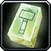
Barre de mithril33 Barre de thorium16
Barre de thorium16 Barre de bronze12
Barre de bronze12 Barre de vrai-argent12
Barre de vrai-argent12 Barre de cuivre11
Barre de cuivre11 Barre de fer10
Barre de fer10 Barre de sombrefer6
Barre de sombrefer6 Barre de légionite5
Barre de légionite5 Barre d'arcanite4
Barre d'arcanite4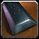
Barre de thorium lourd4 Barre d’azerothium3
Barre d’azerothium3 Barre d'argent2
Barre d'argent2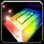
Barre de thorium enchanté2 Pierre dense2
Pierre dense2 Barre d'acier1
Barre d'acier1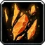
Bauxite1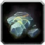
Pechblende1 Pierre brute1
Pierre brute1 Pierre grossière1
Pierre grossière1 Pierre lourde1
Pierre lourde1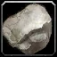
Pierre solide1 Pyrite1
Pyrite1
Herbes — 5
Cuirs, peaux et écailles — 10
 Cuir lourd26
Cuir lourd26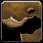
Cuir moyen16 Cuir robuste13
Cuir robuste13 Cuir épais12
Cuir épais12 Cuir enchanté6
Cuir enchanté6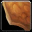
Cuir léger3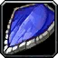
Écaille immaculée2 Peau immaculée1
Peau immaculée1 Peau robuste traitée1
Peau robuste traitée1 Sel de Fonderoc1
Sel de Fonderoc1
Tissus — 11
 Etoffe runique14
Etoffe runique14 Etoffe de laine10
Etoffe de laine10 Etoffe de soie7
Etoffe de soie7 Etoffe de lin6
Etoffe de lin6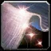
Etoffe de tisse-mage4 Rouleau de tisse-mage2
Rouleau de tisse-mage2 Soie d'araignée toilacier2
Soie d'araignée toilacier2- Soie des ténèbres2
 Rouleau d'étoffe de soie1
Rouleau d'étoffe de soie1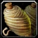
Rouleau d'étoffe en lin1- Soie d'araignée épaisse1
Éléments et matériaux d’enchantement — 19
 Feu élémentaire5
Feu élémentaire5 Essence d'air4
Essence d'air4 Essence de terre4
Essence de terre4 Terre élémentaire4
Terre élémentaire4 Coeur de feu3
Coeur de feu3 Essence de feu3
Essence de feu3 Essence de vie3
Essence de vie3 Noyau de terre3
Noyau de terre3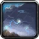
Air élémentaire2 Essence d'eau2
Essence d'eau2 Essence de non-mort2
Essence de non-mort2 Globe d'eau2
Globe d'eau2 Poudre d'illusion2
Poudre d'illusion2 Coeur de fauve1
Coeur de fauve1 Essence du néant supérieure1
Essence du néant supérieure1 Essence malléable de la nature1
Essence malléable de la nature1 Essence éternelle supérieure1
Essence éternelle supérieure1 Grand éclat brillant1
Grand éclat brillant1 Ichor de non-mort1
Ichor de non-mort1
Pièces d’ingénierie — 40
 Poudre noire solide24
Poudre noire solide24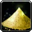
Poudre d'explosion majeure23 Déclencheur instable22
Déclencheur instable22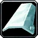
Caisse en mithril19 Rouage en thorium18
Rouage en thorium18 Batterie en or17
Batterie en or17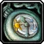
Gyrochronatome17 Poudre d'explosion dense16
Poudre d'explosion dense16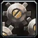
Bidule bourdonnant en bronze15- Poudre d'explosion grossière15
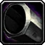
Tube en mithril15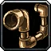
Tube en bronze13 Poignée de boulons en cuivre12
Poignée de boulons en cuivre12 Altérateur de vrai-argent11
Altérateur de vrai-argent11 Convertisseur d'arcanite délicat9
Convertisseur d'arcanite délicat9 Contact en argent8
Contact en argent8 Câble avec fusible8
Câble avec fusible8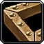
Structure en bronze8 Carburant de fusée des gobelins7
Carburant de fusée des gobelins7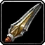
Contrefiche en fer7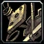
Modulateur en cuivre7- Cylindre damasquiné en mithril6
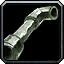
Tube en thorium6 Crosse lourde5
Crosse lourde5 Obus Ev-Lan5
Obus Ev-Lan5 Poudre d'explosion basique5
Poudre d'explosion basique5 Tube en cuivre4
Tube en cuivre4 Coque SUR-T3
Coque SUR-T3 Mèche ignifugée Ev-Lan3
Mèche ignifugée Ev-Lan3 Tube SUR-T3
Tube SUR-T3- Crosse en bois2
 Emballage Ev-Lan2
Emballage Ev-Lan2 Encre d'ingénieur2
Encre d'ingénieur2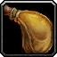
Flasque d'huile2 Rembourrage antidérapant SUR-T2
Rembourrage antidérapant SUR-T2 Cloche SUR-T1
Cloche SUR-T1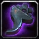
EZ-Thro Tru-Trigger1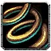
Isoressort de golem1 Languette SUR-T1
Languette SUR-T1 Papier de verre1
Papier de verre1
Fils, fioles, teintures et autres composants — 27
 Citrine10
Citrine10 Rubis étoilé10
Rubis étoilé10 Jade6
Jade6 Agate mousse5
Agate mousse5 Aigue-marine5
Aigue-marine5 Diamant d'Azeroth4
Diamant d'Azeroth4 Malachite4
Malachite4 Catalyseur léger3
Catalyseur léger3 Grande opale3
Grande opale3 Oeil de tigre3
Oeil de tigre3 Teinture viridienne3
Teinture viridienne3 Acide sulfurique2
Acide sulfurique2 Flacon de mojo2
Flacon de mojo2 Mojo puissant2
Mojo puissant2 Noyau de lave2
Noyau de lave2 Oeil ténébreux2
Oeil ténébreux2 Parchemin vierge2
Parchemin vierge2 Pierre de lune inférieure2
Pierre de lune inférieure2 Saphir bleu2
Saphir bleu2 Teinture céruléenne2
Teinture céruléenne2 Âmarite2
Âmarite2 Noyau de feu1
Noyau de feu1 Perle bleue1
Perle bleue1 Petit sac de flammes1
Petit sac de flammes1 Teinture magenta1
Teinture magenta1 Torbernite1
Torbernite1 Énorme émeraude1
Énorme émeraude1
Objets utilisés comme composants — 32
 Longue-vue ornée4
Longue-vue ornée4- Eau de source3
 Huile glaciale3
Huile glaciale3 Bottes noires en tisse-mage2
Bottes noires en tisse-mage2 Cape en lin2
Cape en lin2 Grande bombe en fer2
Grande bombe en fer2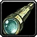
Lunette mortelle2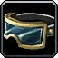
Lunettes de feu2 Asticots1
Asticots1 Bombe en sombrefer1
Bombe en sombrefer1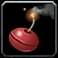
Bombe grossière en cuivre1 Boule de neige1
Boule de neige1 Breuvage d’œil de chat1
Breuvage d’œil de chat1 Cape parachute1
Cape parachute1 Casque de chantier gobelin1
Casque de chantier gobelin1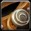
Ceinture matte1 Dynamite solide1
Dynamite solide1 Déchiquetteur dimensionnel - Long-guet1
Déchiquetteur dimensionnel - Long-guet1 Essence d’anarchie1
Essence d’anarchie1 Flèche rasoir1
Flèche rasoir1- Grande bombe en bronze1
- Le Mastoc1
- Lunette basique1
- Lunette de précision1
- Lunettes de fortification des sorts1
- Lunettes de tigre volant1
- Lunettes teintées vertes1
 Petit dragon mécanique en mithril1
Petit dragon mécanique en mithril1 Plume légère1
Plume légère1 Système d'occultation gnome1
Système d'occultation gnome1 Transporteur dimensionnel vers le mont Hyjal1
Transporteur dimensionnel vers le mont Hyjal1 Transporteur ultra-sécurisé : Gadgetzan1
Transporteur ultra-sécurisé : Gadgetzan1
Composants de chaque recette · 241 recettes
Historique des corrections
- 12 novembre 2026 (brouillon, non validé) : première liste complète des recettes de ce métier, d’après des données extraites du client, avec mention « à confirmer ». Aucune publication.[4][1]
- 13 novembre 2026 : « à confirmer » retiré des faits trouvés dans les fichiers du jeu (client 1.60.1.70862), décision t359u. L’obtention « inconnu », les zones non indiquées, les sources sans tampon de build et les valeurs seulement déduites restent à confirmer. Ce n’est pas une confirmation officielle de Blizzard, ni une mise en ligne.[4] Données du jeu (client 1.60.1.70862)
- 14 novembre 2026 : liens internes vers les fiches déjà publiées (bestiaires, listes de recettes, donjons) — lot v40, t361u. Aucun fait nouveau.[1][2][3][4]
- 17 novembre 2026 (v42) : ajout de la section « Matériaux : où les trouver » (composants de chaque recette, lus dans les fichiers du jeu, client 1.60.1.70862).[5] Données du jeu (client 1.60.1.70862)
Ce qui est confirmé / ce qui reste à confirmer
Confirmé par les sources officielles
Reste à confirmer
- Liste officielle complète des recettes, matériaux, prix et formateurs nommés : non publiée par Blizzard.
- Pour une partie des recettes, l’obtention, la source ou la zone n’était pas indiquée dans les données consultées ; ces cellules restent à « non indiqué ».
- Taux de butin : non indiqués dans les données consultées, et non publiés officiellement.
- Certaines recettes n’ont pas de nom français distinct dans les données consultées : le nom anglais est alors utilisé.
Dates clés
Sources
- [1] Récapitulatif de la présentation « Au cœur de World of Warcraft: Forever » (FR) · publié le · consulté le
World of Warcraft: Forever Deep Dive Panel Recap (EN) · publié le · consulté le - [2] Retrouvez-vous autour d’un feu de camp dans World of Warcraft: Forever (FR) · publié le · consulté le
Gather Around the Campfire in World of Warcraft: Forever (EN) · publié le · consulté le - [3] WoW: Forever Hotfixes - November 11, 2026 (EN) · publié le · consulté le
- [4] Guide Ingénierie — liste des recettes (données du jeu (client 1.60.1.70862) (FR) · date de publication non indiquée · consulté le
Engineering profession guide — full recipe list (game data (client 1.60.1.70862) (EN) · date de publication non indiquée · consulté le Données du jeu — client 1.60.1.70862 - [5] WoW Forever client files, build 1.60.1.70862 — data tables and icons read from Blizzard’s official CDN (EN) · date de publication non indiquée · consulté le Données du jeu — client 1.60.1.70862
Sources officielles Blizzard Entertainment (droits réservés). Ce wiki en propose une synthèse originale ; seules de courtes citations sont reproduites. Les informations annoncées peuvent évoluer avant ou après le lancement. Les sources marquées « données du jeu » viennent des fichiers du client WoW Forever (build 1.60.1.70862). Ce n’est pas une confirmation officielle de Blizzard.
Version documentaire : World of Warcraft: Forever — annonces officielles et fichiers du jeu (client 1.60.1.70862), état documentaire 2026-11-17 · révision 17